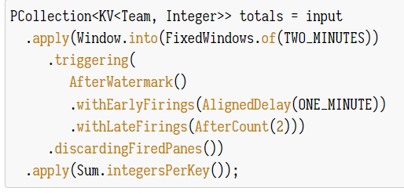
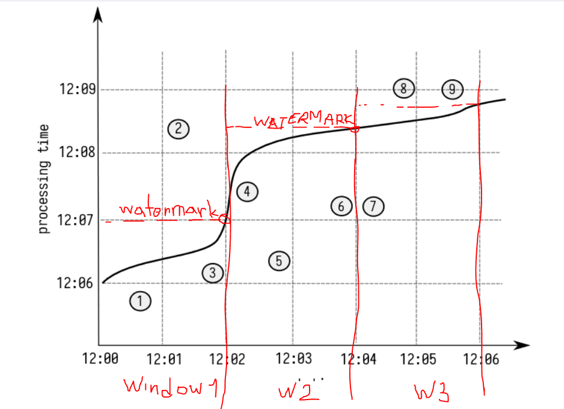

Kaladonter Sad sam gledao po internetu i mislim da si dobro napisao
Eo i za druge kolege cu proci kroz zadatak pa da bude lakse za skuziti

Dakle
.apply(Window.into(FixedWindows.of(TWO_MINUTES))
- Oznacava da cemo na X osi imati FIKSNE prozore od 2 min svaki
.triggering(AfterWatermark()
- Ovo znaci da ce se event trigerati tocno kad dodemo do watermarka
To je taj On time event
- Watermark je ono gdje vam krivulja (heuristika) dodiruje desni dio trenutnog prozora (iliti najvisa tocka krivulje u tom prozoru)
.withEarlyFirings(AlignedDelay(ONE_MINUTE))
- Ovo je Early event - on je u funkciji od nailaska na prvi element pa do watermark-a
U zagradi je uvijet koji kaze da kad dodemo do nekog elementa napravi delay do pune minute pa tek onda okini early event (tj. čekaj jer možda dođe još neki element kojeg ces obraditi zajedno s ovim)
.withLateFirings(AfterCount(2)))
Ovo je Late event koji počinje djelovati tek nakon watermarka
U uvijetu ima AfterCount - tj propagiraj ovaj event tek nakon svaka 2 elementa koja su se dogodila, ako ne skupi 2 elementa onda se nikad nece ni okinuti.
.discardingFiredPanes())
Returns a new Window PTransform that uses the registered WindowFn and Triggering behavior, and that discards elements in a pane after they are triggered (Nisam najsigurniji kako bi ovo protumacio)
Edit: Evo kolega gore je super objasnio
.apply(Sum.integersPerKey());
Vrijednosti unutar istog triggera/eventa se zbrajaju

Dakle ako sad gledamo ovu gore sliku
Imamo 3 prozora na X osi: 12:00-12:02 | 12:02 - 12:04 | 12:04 - 12:06
Watermark 1. prozora je na 12:07
Watermark 2. prozora je na 12:08 i mrvicu iznad tog, ali nije bitno
Watermark 3. prozora je na 12:09
Događaj 1:
Dogodi se u 12:05 i nešto sitno - i od tad pa dok ne dođe do pune minute (AlignedDelay(ONE_MINUTE)) traje naš prvi Early trigger. Kako nismo naišli na nijedan drugi događaj onda se taj event propagira dalje i ukupni zbroj je
Događaj 3:
Dogodi se u 12:06 i nešto sitno i njega ce pokupiti onaj watermark trigger (AfterWatermark())
Dogadaj 2:
Kad se dode do njega pocinje .withLateFirings(AfterCount(2))), ali je problem sto nikad ne dode do Count=2 pa se nikad ne emit-a taj event
Dogadaj 5 je early i završi u 12:07
Dogadaj 4 i 6 su early i zavrse u 12:08 - nisu watermark jer je watermark tek negdje na 12:08:30
Dogadaj 7 je isto tako early i zavrsi u 12:08
Dogadaj 8 i 9 su .withLateFirings(AfterCount(2)), ali ovog puta se skupilo count=2 pa se taj event i okinuo. Nemojte zaboraviti da se ova 2 eventa grupiraju i njigova vrijednost se zbraja (.apply(Sum.integersPerKey())
Prema edgaru tocno rjesenje je
(12:06, 12:00-12:02, E, 1)
(12:07, 12:00-12:02, O, 3)
(12:07, 12:02-12:04, E, 5)
(12:08, 12:02-12:04, E, 10)
(12:08, 12:04-12:06, E, 7)
(12:09, 12:04-12:06, L, 17)